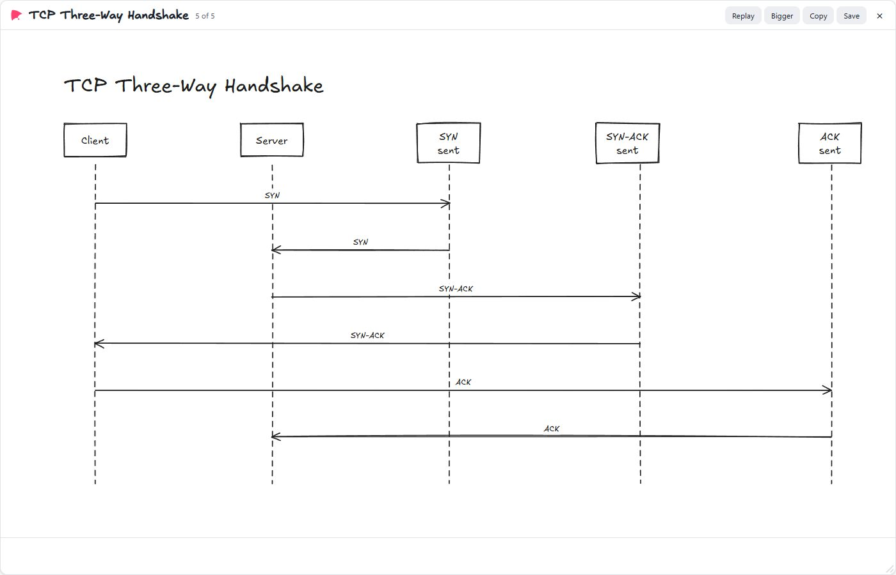
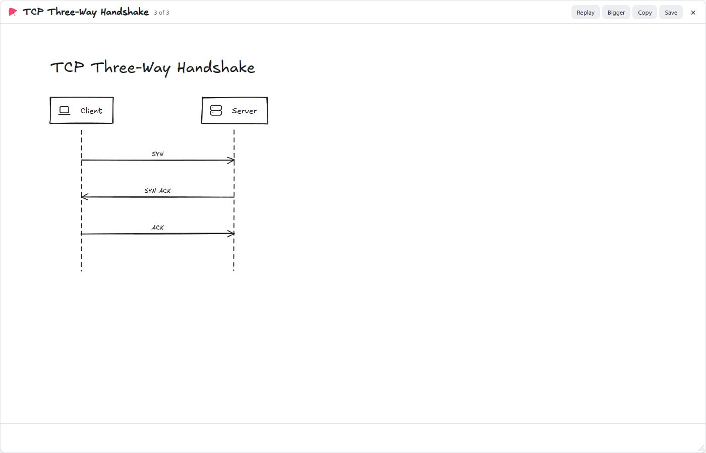
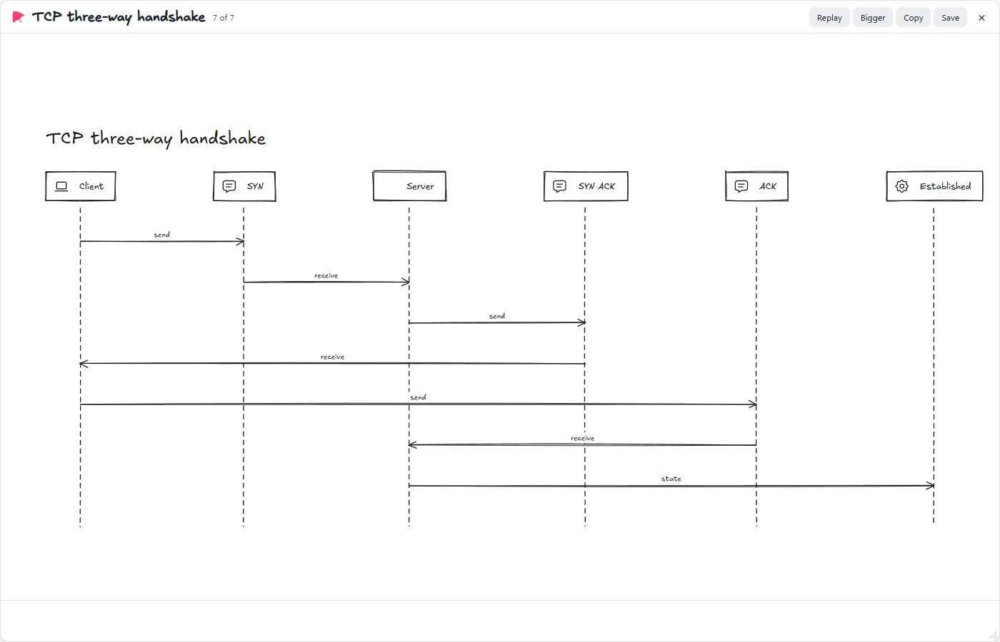
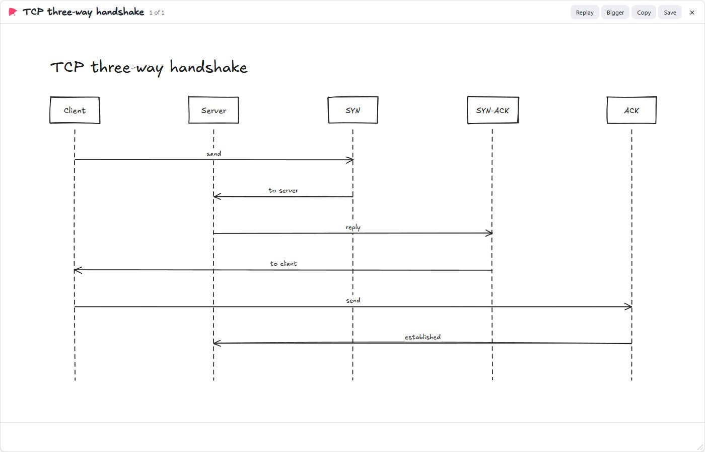
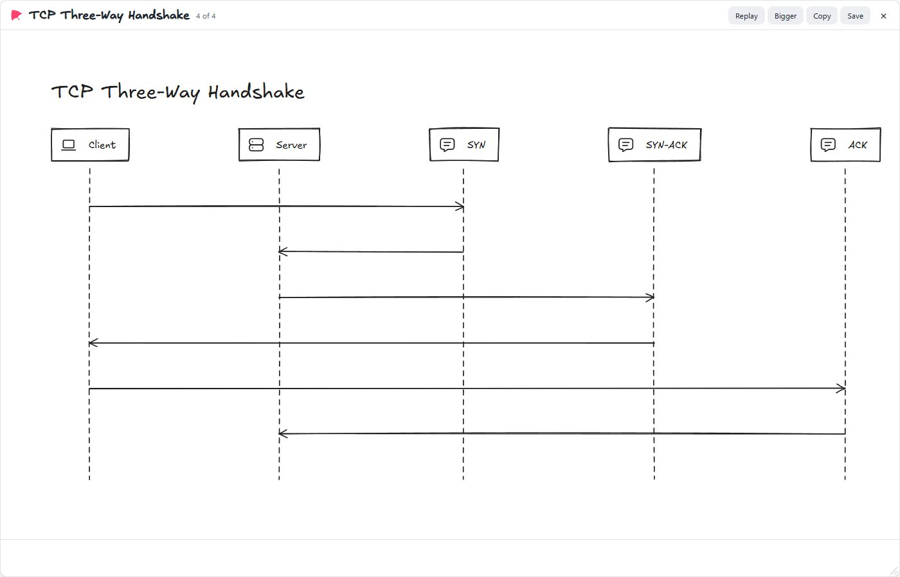
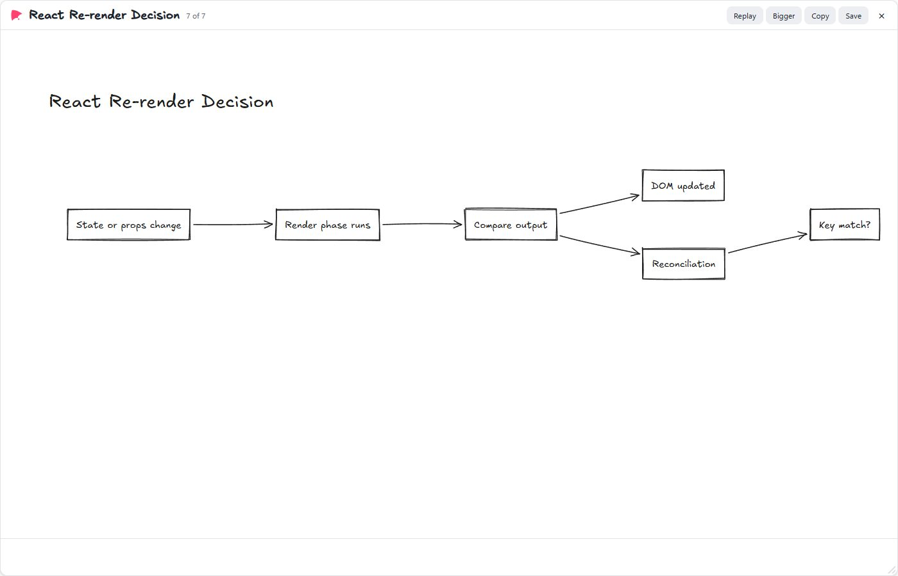
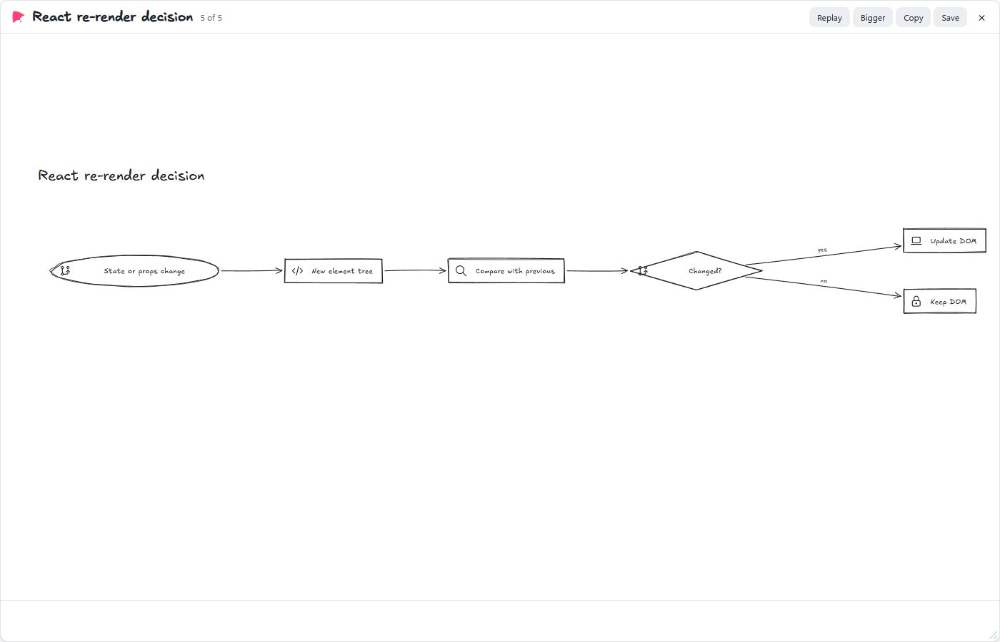
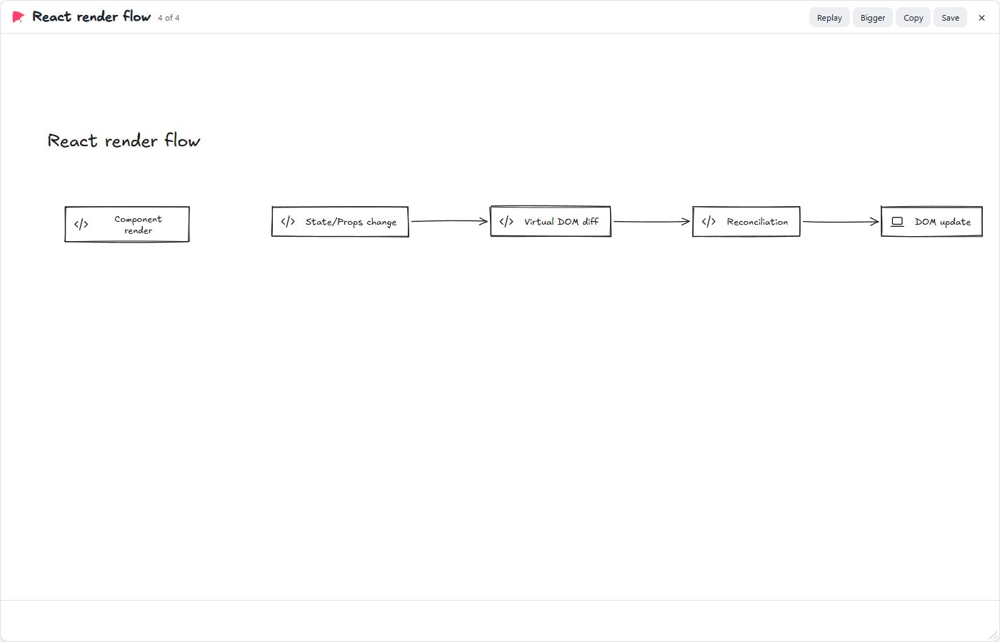
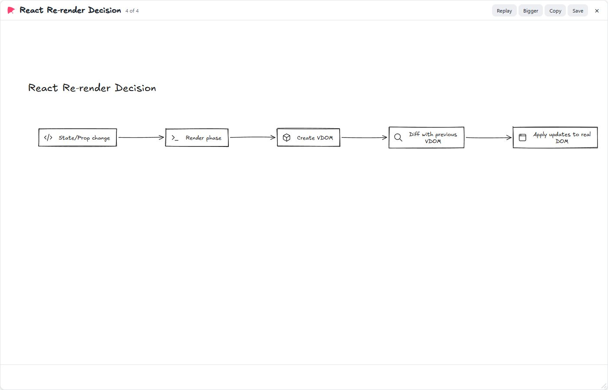
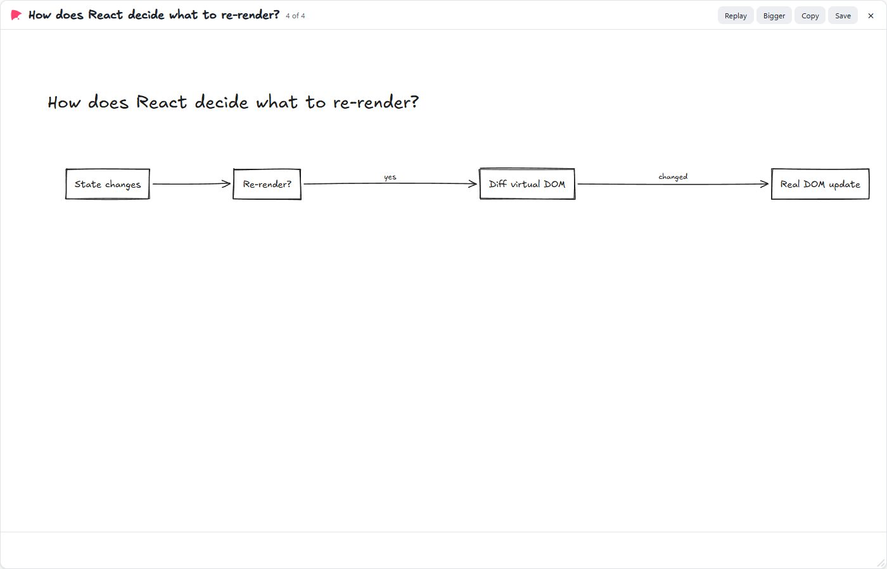

Each lesson from latest.json, finished and rendered by Kite's overlay in the default 1400 × 900 panel on a 1920 × 1080 display. Fresh phase-2 specialist generations, recompiled through the current deterministic layout. Ready time is not renderer first stroke. Failed calls count against the full prompt denominator; crossings are recorded separately from the lint-clean gate. Click a board to open it at full size.
Provider generations: 2026-10-08T04:57:46.491Z. Layout revalidated: 2026-10-08T05:14:04.678Z. Model timings and tokens describe the original generations. See fresh overlay first-stroke samples and conditions.
| Model | Drew | Valid first try | Repairs | First token | First beat (streamed) | First stroke | Output tokens | Lint-clean | Overlaps | Through shapes | Crossings | Text (median) | Text under 14 px |
|---|---|---|---|---|---|---|---|---|---|---|---|---|---|
| deepseek:deepseek-flash (lines)deepseek:deepseek-flash:lines | 2/2 | 100% | 0 | — | 1.7 s | — | 274 | 100% | 0 | 0 | 0 | 14.45 px | 0% |
| deepseek:deepseek-flash (json)deepseek:deepseek-flash:json | 2/2 | 100% | 0 | — | 1.6 s | — | 289 | 100% | 0 | 0 | 0 | 14 px | 0% |
| groq:openai/gpt-oss-120b (lines)groq:openai/gpt-oss-120b:lines | 2/2 | 100% | 0 | — | 1.4 s | — | 298.5 | 100% | 0 | 0 | 0 | 14 px | 0% |
| groq:openai/gpt-oss-120b (json)groq:openai/gpt-oss-120b:json | 2/2 | 100% | 0 | — | 2.2 s | — | 436.5 | 100% | 0 | 0 | 0 | 14 px | 0% |
| moonshot:kimi-k2.6 (lines)moonshot:kimi-k2.6:lines | 2/2 | 100% | 1 | — | 3.4 s | — | 166.5 | 100% | 0 | 0 | 0 | 14 px | 0% |
| moonshot:kimi-k2.6 (json)moonshot:kimi-k2.6:json | 1/2 | 50% | 0 | — | 4.7 s | — | 281 | 50% | 0 | 0 | 0 | 15.8 px | 0% |
Times and tokens are medians over lessons; overlaps, through and crossings are means per lesson.
| Prompt | deepseek:deepseek-flash (lines) | deepseek:deepseek-flash (json) | groq:openai/gpt-oss-120b (lines) | groq:openai/gpt-oss-120b (json) | moonshot:kimi-k2.6 (lines) | moonshot:kimi-k2.6 (json) |
|---|---|---|---|---|---|---|
| · sequenceExplain how the TCP three-way handshake works. |  — · 266 tokens · 5 beats · 17 elements · text 14 px Lint-clean |  — · 210 tokens · 3 beats · 8 elements · text 14 px Lint-clean |  — · 346 tokens · 7 beats · 20 elements · text 14 px Lint-clean |  — · 479 tokens · 1 beats · 17 elements · text 14 px Lint-clean |
— · 142 tokens · 4 beats · 8 elements · text 14 px Lint-clean |  — · 281 tokens · 4 beats · 17 elements · text 15.8 px Lint-clean |
| · flowHow does React decide what to re-render? |  — · 282 tokens · 7 beats · 12 elements · text 14.9 px Lint-clean |  — · 368 tokens · 5 beats · 12 elements · text 14 px Lint-clean |  — · 251 tokens · 4 beats · 9 elements · text 14 px Lint-clean |  — · 394 tokens · 4 beats · 10 elements · text 14 px Lint-clean |  — · 191 tokens · 4 beats · 8 elements · text 14 px Lint-clean | Error: 429 |